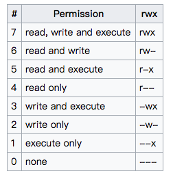

crtl+r 快速寻找之前的一些命令
后台运行程序 &
打包压缩: tar
查看所有进程端口使用情况 netstat -apn
查看端口情况 lsof -i[:port] , sudo 可以查看所有用户
查看某一个命令的详情 man
查看进程信息 ps -aux
查看某个进程的信息(linux环境下) ps -aux|grep [info] info是关键字
git grep 在当前工作目录(Tree)中, 查找相关的东西
杀死某个进程 kill
pkill -f
secure Copy scp命令:
给可执行文件(sh)添加权限: chmod 777 *.sh
chmod adc file a,b,c表示三者用户的权限
-rw------- (600) -- 只有属主有读写权限。
-rw-r--r-- (644) -- 只有属主有读写权限；而属组用户和其他用户只有读权限。
-rwx------ (700) -- 只有属主有读、写、执行权限。
-rwxr-xr-x (755) -- 属主有读、写、执行权限；而属组用户和其他用户只有读、执行权限。
-rwx--x--x (711) -- 属主有读、写、执行权限；而属组用户和其他用户只有执行权限。
-rw-rw-rw- (666) -- 所有用户都有文件读、写权限。这种做法不可取。
-rwxrwxrwx (777) -- 所有用户都有读、写、执行权限。更不可取的做法。
以下是对目录的两个普通设定:
drwx------ (700) - 只有属主可在目录中读、写。
drwxr-xr-x (755) - 所有用户可读该目录，但asdfc只有属主才能改变目录中的内容。
如下是权限图

制作可执行文件bin的软连接 ln -s [可执行文件路径]
查看某一个端口的情况 netstat -an|grep 8091
显示内存使用情况: free -h
uptime为显示当前系统的平均负载, 17:29 up 18 days, 27 mins, 5 users, load averages: 2.37 2.26 2.15 最近
统计文件中的字数,字节数,行数: wc (-c -l -w)
ps -aux监控linux上面的相关进程
dstat:多功能网络系统资源统计工具
netstat: 查看linux上网络相关的信息
systemctl: 系统服务管理器指令
netstat 显示网络状况
find :查找某个文件的命令
find . 查看当前目录下的所有文件find /home -name "*.txt" 查看/home目录下所有.txt的文件find . \( -name "*.txt" -o -name "*.pdf" \) 查找当前路径下面所有以 .txt .pdf 结尾的文件find . -name "*.py"|wc -l 查看当前目录下所有的py文件find . -not \( -path './$(VENV)' -prune \) -name '*.pyc' -exec rm -f {} \; 清除python项目中pyc文件, find命令中括号使用了转义, 用来组织多个条件find . \( -name "*.py" \)| xargs wc -l 统计当前文件中所有的代码行数vmstat 显示虚拟内存状态, 可以报告关于进程, 内存, I/O等整体的情况
cat /proc/meninfo 查看物理内存和文件缓存情况
iostat用来监视输入输出设备和cpu的情况
iostat -x /dev/sda1 用来查看磁盘io详情top -p PID查看某一个进程的占用内存的大小
tail -f: 常用来跟踪某个文件的输出
netstat: linux中查看网络状态信息
netstat -an | grep ':80' 查看在具体某一个端口的进程
sort: linux下对文件进行排序输出, 并将结果输出至标准输出端口中
sort -nk 2 -t: sort.txt 对sort.txt文件以:为分隔符, 安装第2列的数值进行升序排序
mysqldump -h hostname-of-the-server -u mysql_user -p database_name > file.sql 将远程的数据库dump到本地
mysql -u username -p database_name < file.sql 将mysql导入到数据库中
du -h <file>查看文件大小
du -b <file>以字节数查看文件大小
bash -c <stirng> -c 为command
bash -c "echo hello" 执行字符串的命令
sudo service jenkins restart|stop|start重启jenkins
free -m 查看内存使用量和交互区使用量
locate 查找某个文件
ss 命令用来显示处于活动状态的socket信息，和netstat类似，但是ss的优势在于可以显示更多更详细的TCP和连接状态的信息，比netstat更快速高效
ss -t -a: 显示TCP连接ss -s: 显示所有socket摘要ss -pl: 查看进程使用的socket例如：ss -pl|grep java查看java关键字的程序使用socket的情况ss -pl|grep 2181查看2181端口对应的进程信息ld: 将目标文件打包成为结果可执行文件
cat /proc/cpuinfo 查看CPU相关的信息
cat /proc/meminfo 查看内存相关信息
sudo su -切换根用户
su <username> 切换到某个用户
grep <key> <txt>查找和过滤文本中的关键内容
grep -A <num> 在文件中显示匹配的后几行grep -B <num> 在文件中显示匹配的前几行grep -i:忽略大小写grep -n:显示行号awk命令
sudo lsof -i:8060|awk 'NR>1 {print $2}'|xargs sudo kill -9杀死8060端口上面所有进程NR>1为从第二行开始，{print $2}为输出第二列ls -lht: 查看当前目录下文件的大小
rsync远程数据同步工具： rsync
nc： linux下强大的一个命令，全名netcat
nc -lp >outputfile, 发送端 nc destip port <inputfileobjdump 显示目标文件中的所有信息，例如符号表，等，最大的作用在于反汇编
sysctl: 动态修改内核运行时的参数，包含TCP/IP和虚拟内存的一些高级设置
:noh:%s/<源字符串>/<目的字符串>/g g表示全局确认:<scope>s/<源字符串>/<目的字符串>/<option> , %表示整个文件, 1,20 表示从1行到20行, .,$表示从当前行到行尾:tabe <file>:tabnew <file>tabc:114, 123 s/^/#/g: 114, 123 s/^#//gctrl + v 选中行 I 大写(I), # 注释ctrl + v选中行以及要删除的东西， dvim -d 使用vim diff两个不同的文件git checkout 切换分支
git add <file> 添加某个文件到本次提交
git commit 提交本次commit
git commit -a 提交更新
git push origin [branch-name] 提交更新到远程分支
git fetch orgin 获取所有远程分支的更新
git branch --track <new><remote> 用来第一次创建本地分支提交代码
git rebase -i 在本地进行commit的合并 i 之后加相应的参数可以进行到某个时间点合并
git rebase -i~<num>使用d来删除某个commit
可以通过git reset 和 git checkout 来修改代码文件的工作区域
git remote add 用来添加不同的remote, 通常来说是
git fetch origin, git merge origin/another-branch 用来在更新本地分支(合并远程分支)
git fetch origin, git rebase origin/another-branch 功能同上
当更新本地分支出现:First, rewinding head to replay your work on top of it...,并且要强制更新本地分支则 git fetch origin, git reset --hard origin/<branch>
当本地分支更新完成之后, 需要手动git push origin/<branch> 更新跟踪的远程分支
git branch branch_name --set-upstream-to origin/branch_name git 切换跟踪的远程分支
当提交merge request时,出现了冲突则git fetch git rebase origin/<branch>来解决冲突
git diff 用来查看当前改变和HEAD的区别, git diff HEAD^ HEAD查看上一次提交和当前HEAD的区别, git diff a b, a 早期提交, b后来提交
添加.gitignore文件echo '.idea' >> .gitignore, git rm -r --cached .idea, git add .gitignore
git config --local 配置当前项目的配置, git config --global配置全局配置
git reset HEAD@{3} 使用通常为git reset HEAD^之后查看git reflog来返回上一次提交
git reset --soft HEAD~1不提交上一次的commit
git revert <commit> undo the specific commit
git commit -a -amend 提交修改至最后一次commit中
git rm --cached <filename> 从git中删除, 并不从文件系统中删除
git branch -m <new-branch-name>: 重新命名一个新的分支的名字
git push origin :old-branch: 删除一个远程分支
git push origin :old-name new-name: 删除远程分支, 并push新分支名字
git branch -d <branch name>: 删除本地分支
git branch -D <branch name>: 强制删除本地分支
git branch -r: 列出所有远程分支
git cherry-pick <commit A>将其他commit提取到本地分支上面
git cherry-pick <commit A>..<commit B>将A到B的commit提取到本地分支上面, 注意A比B更早的提交
git cherry-pick <commit A>..<commit B>将包含A到B的commit提取到本地分支上面
git cherry-pick是等同与一次提交, 如果想要undo某次cherry-pick, 使用git reset --hard <commit>
git checkout <commit A> -- <file> 去掉某次提交的文件
git reset HEAD <file>将某次提交的文件，放到暂存区
git checkout -- <file>恢复修改之前的文件
git 不提交某次更新：
git reset --soft HEAD~1 软reset到某个点git reset <file>将具体某个file从已提交的去除git commit -c ORIG_HEAD 使用原来的ORIG_HEAD的commit message信息git checkout -- <file>恢复对该文件的改变， 即恢复到之前一个commit版本git HEAD 指向当前的commit
git ORIG_HEAD 为在进行了一次危险的操作之后， HEAD已经改，ORIG_HEAD为前一个状态的HEAD通常用来恢复状态
git tag: 列出所有的tag
git tag <tagname>
git tag --list "meg*" 列出以meg开头的tag
git checkout tags/<tagname> -b <branchname>: checkout 到<tagname> tag上
git push origin <tagname>: 将某个tag，push到远程
强制merge，dev 分支overwrite master分支，结果即为master分支的内容变成了dev的内容。（使用了ours merge strategy ）
reference:
.a 文件编译期静态链接, 在编译器静态链接到项目中, 是项目工程的一部分.so 文件运行期动态连接到项目中去,如果对.so文件有一定的改动不需要重新编译项目工程文件.so gcc -Wall -fPIC -c *.cgcc -shared -o libfoo.so foo.ogcc -shared -Wl,-soname,libctest.so.1 -o libctest.so.1.0 *.o tcpdump 运行启动linux下的抓包工具
MTU: maximum transmission unit, 为10进制的字节, 可以为报文或者帧. TCP报文超过了MTU则会导致重传tcpdump -i eth0: 从特定的网卡接口抓包tcpdump -c 5: 抓取数量为5的报文tcpdump -A: 将报文以ASCII的形式输出tcpdump -D: 列出所有可用的网卡接口tcpdump -XX: 将报文以16进制tcpdump -w xxx.pcap: 抓包写入文件tcpdump -r xxx.pcap: 抓包读入文件 tcpdump port 80: 从特定的端口进行抓包, tcpdump -i lo0 port 7080对本地7080端口进行抓包tcpdump -i eth0 src ip从源端口进行抓包tcpdump -i eth0 dst ip抓取目的端口的包该工具用来抓HTTP包
export: 该命令通常是用来创建一个环境变量, 即当执行一个子程序时, 将会继承来自于父进程的环境变量. ssh-add 命令添加private key到ssh中, 具体为ssh-add -K <private key(wangruoxuan_internalJump)>, 记得输密码.ctrl + a: 移动bash命令的行首, ctrl + e: 移动bash命令的行尾ctrl + b: 光标前移一个字符, ctrl + f: 光标后移一个字符ctrl + u: 删除光标左边所有, 即删除全部ctrl + r: 关键字查找之前的命令ctrl + w: 以单词模式删除命令ctrl + l: 清屏alias 可以用来设置运行指定的脚本, 或者命令set -ecurl -s --user 'name:password' -G https:xxx.com
-s 静默输出--user 用户认证-G GET方法curl -d '{"hello": "ok"}' -X POST http://10.104.7.46:8000/hello
shift+command+r/f: 全局替换或者查找, 可以指定范围comand +r/f: 当前文件查找或者替换command + o: 查找类alt + command + o: 查找某个函数shift + command + o: 查找某个路径command + b: 查找上一级command + [: 返回上一级command + ]: 返回下一级command + e 打开最近的打开过的文件
ssh host -v 连接到指定的host输出debug信息